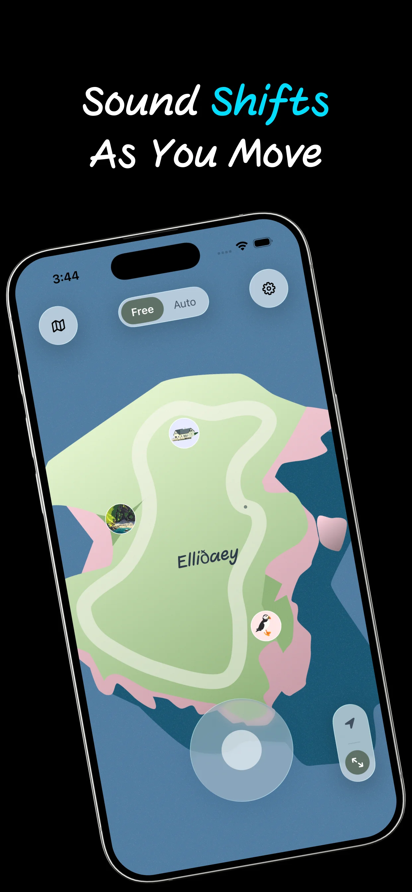
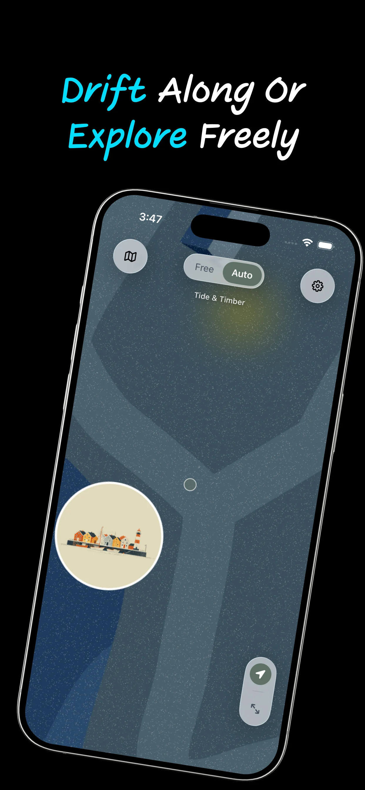
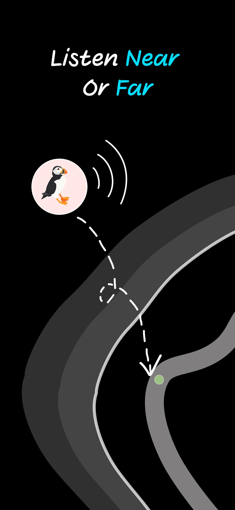
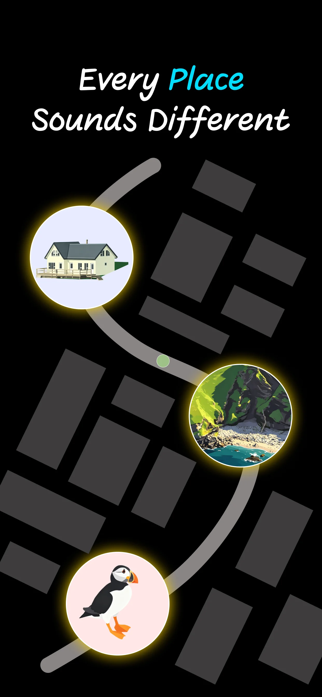

The 500MB Crisis: From Ink-Wash Cats to an AI-Powered Breakthrough
How a struggle with high-quality animations led to the creation of TransMov and a leaner, smoother PurrrrrFocus.
Lightweight, offline-first utilities crafted with absolute minimalism for your daily life and technical workflows.
A spatial ambient soundscape app—explore fictional islands where movement changes what you hear, quietly and on your device.




A quiet sanctuary for your mind beyond the horizon.
LonelyIsle is not a music player—it is a place you enter. Each island is a self-contained world of ambient sound where you roam freely or let the island guide you, with your journey continuing in the background and on the Lock Screen.
A movement-driven iOS app blocker that links screen time to physical activity—using step goals before you scroll.


Unlock your apps, one step at a time.
Designed for desk-bound professionals and chronic doom-scrollers, Step1st uses physical step goals to break sedentary loops and enforce a "Move-to-Unlock" daily ritual. Step1st solves the modern dilemma of digital addiction coupled with physical inactivity. By linking screen time to movement, it ensures you hit your activity targets before surrendering to distractions. It’s not just an app locker; it’s a self-discipline engine for those who want to reclaim their health by making movement the prerequisite for entertainment.
A minimalist breath and pause timer for seekers of digital peace—a gentle space to reset awareness amidst daily noise.


The most productive thing you can do is just be.
TapPause is an intentional ritual of non-doing—a quiet invitation to step out of the frantic stream of tasks and return to the present moment, fully offline.
See how to take a real break from your phone in a packed day:
A minimalist iOS Pomodoro timer with classical Chinese aesthetics and a cat companion—for deep work and ADHD-friendly focus.


Focus enhancement, wrapped in calmness.
PurrrrrFocus pairs a minimalist iOS Pomodoro timer with classical Chinese aesthetics and a cat companion system for ADHD users, students, and anyone chasing flow. Beyond the standard Pomodoro technique, it offers Elite Focus and Count-Up modes designed to reduce overwhelm—making it a perfect companion for deep work or ADHD support. It’s more than a utility; it’s a calm, user-friendly courtyard where your virtual cat grows alongside your focus habits.
See how PurrrrrFocus is used in real study routines:
A local-first macOS utility that extracts transparent animated assets from video—for UI designers and web developers.


A specialized layer for UI asset extraction.
TransMov is a local-first macOS utility for UI designers and web developers who need transparent animated assets from video—without cloud uploads. It sits between your source footage and production code, converting clips into transparent APNG or WebP locally on your Mac so sensitive brand assets stay on-device.
Understand different use cases and tradeoffs:
An offline IPA transcription tool that turns English passages into structured, printable phonetic worksheets—100% on-device.


Stop fighting with flaky online converters and broken formatting.
Built for teachers, linguistics students, and serious learners, Phonetic Formatter turns full English passages into structured, printable phonetic worksheets. Paste a passage, generate word-aligned IPA in seconds, and export to PDF or Word—all 100% on-device. It’s the gold-standard CMU dictionary reimagined for educators who need to ship materials, not just look up single words.
See how teachers use offline IPA for classroom-ready handouts:
Where software meets practice. I built the Born To Speak Lab as a content companion to my apps — a space for role-play scripts, board-game prompts, and real-world practice to help you move from "learning" to "speaking" with confidence.
Integrated with Phonetic Formatter to bridge the gap between accurate IPA symbols and natural spoken English. It's a complete loop: from clear tools to fluent conversations.
A content initiative by Louis Builds · Bridging tools and fluency · Since 2024
How a struggle with high-quality animations led to the creation of TransMov and a leaner, smoother PurrrrrFocus.
Building a word-aligned transcription engine that works 100% offline.
Exploring the balance between Guochao aesthetics and deep work rituals.
My commitment to privacy: why none of my apps require an account.
Occasional notes on building, focus, and quiet software.
Read more on Substack →